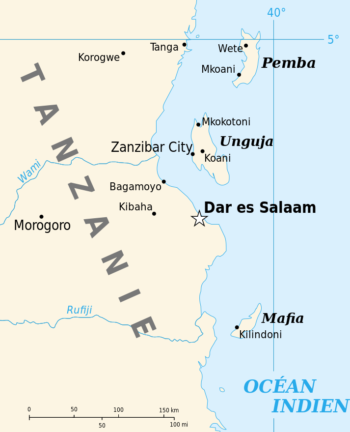

|
J'ai visité cette année l'archipel de Zanzibar. Zanzibar, en swahili Funguvisiwa ya Zanzibar, est un archipel de l'océan Indien
situé en face des côtes tanzaniennes, formé de trois îles principales (Unguja, Pemba et Mafia) et de plusieurs autres petites îles. |
 |
Liens utiles :
Office du tourisme de Zanzibar
Guide du routard
Le petit futé
Copyright Zozor - Tous droit réservés.
Me contacter